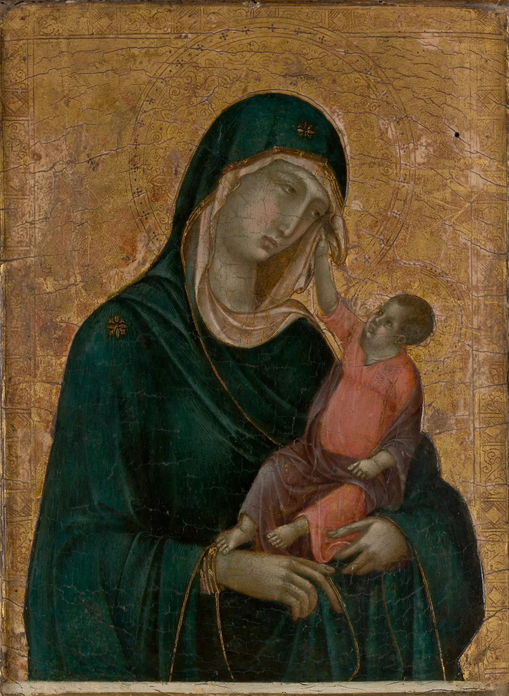

미술사 실험실
열한 회차 동안 그림을 한 점씩 읽었다. 금빛 바탕의 성모, 어둠 속의 촛불, 두루마리의 먼 산, 판화의 파도. 이 장은 그 그림들을 한 줄의 연대표 위에 다시 세운다. 막대 하나가 작품 하나다. 작품을 고르면 그림에서 팔레트를 뽑고, 명도가 어디에 몰렸는지 세고, 무게중심과 선의 방향을 그림 위에 얹는다. 그리고 두 작품, 또는 두 시대를 나란히 놓는다. 숫자는 비교를 빠르게 해 주지만, 그 숫자가 읽는 것은 원작이 아니라 원작을 찍은 사진이라는 것을 이 장은 한 번도 잊지 않는다.
- 연대표 위 작품에서 팔레트(k-평균), 명도 분포, 무게중심, 선 방향을 뽑고 각각이 무엇을 재고 무엇을 못 재는지 안다.
- 사진 속 색이 원작과 다른 이유(바니시 황변, 바탕의 변색, 조명과 카메라, 안료의 퇴색)를 말하고, 그 크기를 실험으로 가늠한다.
- 명도 히스토그램으로 테네브리즘과 밝은 조의 그림, 먹의 농담이 어떻게 다른 모양을 만드는지 본다.
- 3분할 격자, 무게중심, 선 방향 분포를 그림 위에 얹고, 계산과 내 눈이 어디서 같고 다른지 비교한다.
- 두 작품, 두 시대를 나란히 놓되, 몇 점의 평균을 시대의 성격으로 일반화하지 않는다.
실험실 사용법: 연대표와 분석 영역
실험실에는 공공 도메인 작품 99점이 들어 있다. 서양 71점, 동아시아(중국·한국·일본) 28점이다. 모두 이 책의 앞 장들과 서가의 다른 책에서 이미 쓴 이미지이고, 대부분 메트로폴리탄 미술관의 공개 이미지다. 입체 작품(조각, 도자기)은 사진의 조명이 형태를 만들기 때문에 넣지 않았다. 작품을 고르는 기준은 하나였다. 이 책의 앞 장에서 이미 읽은 그림일 것. 그러니 이 99점은 미술사의 표본이 아니라 이 책이 읽은 그림의 목록이다. 실험실의 모든 비교는 이 한계 안에서만 말한다.
연대표의 가로축은 한 가지 축척이 아니다. 기원전 1500년부터 기원후 1000년까지의 2,500년을 왼쪽 13%에, 1000년부터 1600년까지를 29%에, 1600년부터 1910년까지의 310년을 나머지 58%에 놓았다. 뒤쪽에 작품이 몰려 있어서다. 축척이 바뀌는 자리에 점선을 그었다. 막대가 겹치면 옆으로 밀거나 한 줄 안에서 위아래 칸으로 나누고, 밀린 막대는 짧은 선으로 실제 연도 자리와 잇는다. "13세기경", "18세기"처럼 세기 단위로만 기록된 작품은 이 책이 그 세기의 알맞은 자리(초·중엽·말)에 놓았고 막대 아래쪽에 작은 흰 점을 찍었다. 연대는 소장처 기록을 따른다.
막대 하나는 그 작품에서 뽑은 다섯 색을 비율만큼 쌓은 것이다. 중간 명도로 바꾸면 막대가 그 그림 화소들의 가운데 명도 L*(ColorBook 6장)를 가진 회색 하나가 된다. 연대표 위를 끌면 가장 가까운 막대가 골라지고, 아래에 그 작품의 사진과 분석 영역(Analysis region)이 나타난다. 분석 영역은 사진에서 실제로 계산에 넣는 사각형이다. 미술관 사진에는 그림 둘레의 검은 바탕, 액자 그림자, 책의 바깥 바탕이 함께 찍혀 있는 경우가 많다. 그대로 두면 "어두운 화소"가 엉뚱하게 늘어난다. 그래서 모든 작품의 가장자리 2%를 기본으로 잘라 내고, 검은 바탕이 넓은 작품(드 라 투르, 카날레토, 코로, 세잔, 고린 등)은 이 책이 눈으로 사각형을 따로 정했다.
연대표 위의 99점
- 작품
- —
- 연대
- —
- 재료
- —
- 중간 명도 L*
- —
막대를 훑으면 몇 가지가 먼저 보인다. 17세기 서양의 어두운 막대들, 19세기 말의 밝고 다채로운 막대들, 동아시아 줄의 갈색 막대들. 그런데 이 첫인상의 상당 부분은 시대가 아니라 재료와 세월과 사진에서 온다. 그 이야기를 먼저 해야 다음 패널들을 믿을 만큼만 믿을 수 있다.
팔레트 패널: 다섯 색으로 줄이면 무엇이 남나
팔레트 추출(Palette extraction)은 그림의 수만 화소를 몇 개의 대표색으로 줄이는 일이다. 실험실은 ColorBook 14장과 같은 k-평균(k-means)을 쓴다. 화소들을 지각적으로 고른 색 공간(OKLab)에 점으로 뿌리고, k개의 무리로 나눈 뒤 무리마다 평균색을 대표로 삼는다. 띠 위의 비율은 그 무리에 든 화소의 몫, 곧 면적이다. 중요도가 아니다.
아래 비교 화면의 왼쪽은 사진, 오른쪽은 화소마다 가장 가까운 팔레트 색으로만 다시 칠한 그림이다. 경계선을 끌어 둘을 맞대고, 색 수 k를 바꿔 본다.
팔레트와 그 팔레트로만 칠한 그림
#845e36(32%)이고, 성모의 망토는 거의 검은 초록 두 색(20%, 20%)으로 나뉜다. 아기 예수의 붉은 옷은 다섯 색 안에 없다. k를 10까지 올리면 붉은 갈색 #91543e가 2%로 겨우 나타난다. ② 고린의 「야쓰하시의 붓꽃」으로 바꾸고 k를 2, 3, 4로 올린다. k=2에서는 잎과 꽃의 어두운 초록 #4a5c46(52%)과 금박 #c7a167(48%) 둘로 갈린다. 붓꽃의 짙은 청색은 k=5에서야 어두운 청회색 #2d3e43(10%)으로 나타난다. 반대로 금박은 k를 올릴수록 밝기가 다른 금색 여럿으로 쪼개진다(k=10에서 다섯 가지). 반사하는 금은 사진에서 한 색으로 찍히지 않는다. ③ k를 10까지 올린다. 재현 오차는 줄지만 (고린은 k=2의 ΔE 11.1에서 k=10의 4.5로), 늘어난 색은 대부분 넓은 면의 밝기 차이(금박의 명암, 바탕의 얼룩)다. 작은 강조색은 여전히 가장 늦게 나타난다. 색을 늘리는 것과 그림을 이해하는 것은 다른 일이다. (팔레트는 OKLab k-평균(k-means++ 시작, 시드 7 고정, 표본 6,000화소). 재현 오차는 화소 넷 중 하나를 골라 원래 색과 배정된 팔레트 색 사이 ΔE2000을 평균한 값이다.)k-평균은 넓은 면을 사랑한다. 페르메이르의 다섯 색이 모두 채도 0.03 아래의 회갈색으로 나오는 것도 그래서다. 파란 치마와 흰 두건은 면적이 작아 넓은 회갈색 무리에 흡수된다. 무리의 평균이 거리 제곱의 합을 가장 작게 하도록 움직이므로, 넓은 면적의 색이 대표색을 끌어당기고 작은 면적의 강조색은 큰 무리에 흡수된다(ColorBook 16장). 그래서 팔레트 패널을 볼 때는 늘 두 가지를 같이 본다. 사라진 작은 색이 그림에서 무슨 일을 하는가. 그리고 가장 넓은 색은 정말 그린 사람이 고른 색인가. 동아시아 비단 그림의 팔레트 맨 앞자리를 차지하는 갈색은 대개 둘째 질문에 "아닐 수 있다"는 답을 받는다.

세월과 사진이 바꾸는 팔레트
그럼 사진 속 색은 원작에서 얼마나 멀까. 정답은 작품마다 다르고, 사진만으로는 알 수 없다. 대신 반대 방향의 실험은 할 수 있다. 지금 사진에 누런 바니시 한 겹과 보정하지 않은 따뜻한 조명을 더하면 팔레트가 얼마나 움직이는지를 재는 것이다. 바니시는 빛이 그림까지 들어갔다 나오며 두 번 지나는 노란 필터로, 조명은 카메라가 낮빛(6,500 K)에 맞춰져 있는데 실제로는 더 따뜻한 빛으로 찍었다고 보는 색순응 변환(ColorBook 10장)으로 흉내 낸다.
바니시와 조명이 팔레트를 얼마나 옮기나
#ffbc6d로 찍히고, 팔레트 차이는 ΔE 13.3, 중간 명도는 29에서 22로 떨어진다(흰색이 넘치지 않게 노출을 맞췄기 때문이다). 호쿠사이로 바꾸면 ΔE 22.7이다. 바니시 한 겹보다 보정하지 않은 조명이 훨씬 크게 흔든다. ③ 평사낙안을 고르고 바니시를 100%까지 올린다. 비단 바탕이 이미 갈색이라 차이는 ΔE 6.1에 그친다(페르메이르는 같은 100%에서 9.8). 누런 사진에 누런 층을 더하면 덜 달라 보인다. 거꾸로 말하면 지금 사진의 갈색 가운데 어디까지가 세월인지는 이 사진 안에서 가려낼 수 없다. (교육용 근사: 바니시는 선형광 R·G·B에 각각 1−0.06a, 1−0.25a, 1−0.7a를 곱하는 노란 필터, 조명은 흑체 색온도의 흰색에서 D65로 가는 브래드퍼드 순응을 거꾸로 적용하고 흰색이 넘치지 않게 노출을 맞춘 것이다. 실제 바니시의 분광 흡수와 카메라 처리는 이보다 복잡하다. 팔레트 차이는 두 팔레트의 각 색에서 다른 팔레트의 가장 가까운 색까지 ΔE2000을 비율로 가중 평균해 양쪽을 평균한 값이다.)이 실험의 교훈은 두 갈래다. 하나, 이 책의 모형으로 누런 바니시 한 겹은 팔레트를 ΔE 2~10, 보정하지 않은 전구색 조명은 ΔE 13~23 옮긴다. 나란히 놓으면 누구나 알아보는 차이다. 그러니 두 작품, 두 시대의 팔레트 차이가 이 정도보다 작다면 그 차이로 시대의 색을 말하기는 어렵다. 둘, 그래도 명도의 순서는 잘 남는다. 노란 필터는 모든 색을 비슷한 비율로 어둡게 하므로, 어디가 가장 밝고 어디가 가장 어두운지는 거의 바뀌지 않는다. 다음 절의 명도 패널을 팔레트보다 조금 더 믿을 수 있는 이유다.
명도 패널: 빛과 어둠의 분포
명도 히스토그램(Value histogram)은 분석 영역의 화소를 L* 0~100 사이 25칸(칸마다 L* 4)에 세어 막대로 그린 것이다. 4장의 테네브리즘처럼 어둠이 화면 대부분을 덮은 그림은 막대가 왼쪽에 몰리고, 밝은 조의 그림은 오른쪽에 몰린다. 수묵은 바탕(비단, 종이)이 넓은 봉우리 하나를 만들고 먹의 농담이 그 왼쪽으로 꼬리를 끈다.
히스토그램 위의 손잡이를 끌어 기준 명도를 정한다. "기준보다 어두운 곳" 보기에서는 기준보다 어두운 화소가 하늘색으로 칠해진다. 그림의 어디가 어둠의 몫인지 눈으로 확인한다.
명도 히스토그램과 어둠의 자리
히스토그램의 모양에는 좋고 나쁨이 없다. 드 라 투르의 막대는 어둠에 몰려 있지만 바로 그래서 촛불과 흰 소매가 화면을 지배한다. 피사로는 반대로 밝은 쪽에 몰려 있고, 작은 어두운 나무줄기와 사람들이 점처럼 리듬을 만든다. 같은 "어두운 그림"이라도 모양은 다르다. 렘브란트의 「아리스토텔레스」 사진은 드 라 투르보다 더 어두워 중간 L*이 3, 밝은 쪽 5%의 경계도 L* 22에 그친다. 어둠 속에서 빛이 천천히 떠오르는 화면이다. 드 라 투르는 아주 어두운 바탕 위에 L* 40을 넘는 밝은 곳이 따로 떨어져 있다(95% 값 46). 어둠과 갈라진 빛이다. 다만 렘브란트 사진의 극단적인 어둠에는 짙어진 바니시와 촬영의 몫이 섞여 있을 수 있다.
구도 패널: 격자, 무게중심, 선의 방향
구도 패널은 세 가지 선을 그림 위에 얹는다. 첫째, 3분할 격자(CompositionBook 9장). 화면을 가로세로 셋으로 나눈 선이다. 이 책이 그은 선이고, 그림이 이 선을 따랐다는 증거가 아니다. 둘째, 시각적 무게중심(Center of visual weight). CompositionBook 7장의 픽셀 모형을 그대로 쓴다. 화소마다 그림 전체의 중간 명도에서 얼마나 떨어졌는지, 얼마나 선명한지로 무게를 매기고 그 평균 자리를 찍는다. 셋째, 선 방향 분포(Edge orientation distribution). 명도가 급하게 바뀌는 곳(윤곽, 수평선, 기둥, 옷 주름)에서 그 경계가 어느 방향으로 뻗는지 모은 것이다.
아래 시뮬레이터에서는 먼저 계산을 끄고 내 짐작을 정한다. 노란 손잡이를 끌어 "이 그림의 무게가 모인 곳"이라고 느끼는 자리에 둔다. 그다음 무게중심을 켜서 계산과 비교한다. 노란 바늘은 화면을 12칸 폭의 격자로 나눠 칸마다 주된 선 방향을 그린 것이고, 바늘이 길수록 그 칸의 선이 한 방향으로 뚜렷하다.
3분할, 무게중심, 선 방향
계산과 짐작이 어긋나는 자리가 가장 흥미롭다. 사람은 얼굴, 손, 손가락이 가리키는 곳, 이야기의 주인공에 무게를 더 둔다. 픽셀 모형은 그것을 모른다. 반대로 사람이 놓치는 것을 계산이 잡아 주기도 한다. 다비드의 그림에서 짐작은 대개 가운데의 소크라테스에 놓이지만, 계산은 (57%, 64%)로 소크라테스보다 오른쪽 아래, 붉은 옷의 제자들과 밝은 침상 쪽으로 끌려 내려간다. 어느 쪽이 "맞다"가 아니라, 둘이 다른 것을 재고 있다는 것을 아는 것이 이 패널의 쓸모다.
두 시대 나란히: 평균의 쓸모와 함정
이제 작품을 무리로 묶는다. 실험실은 99점을 여덟 무리로 나눴다. 서양 다섯 무리(고대·중세 ~1400, 1400~1600, 17세기, 1700~1850, 1850~1900)와 중국, 한국, 일본이다. 경계는 이 책이 연도로 기계적으로 그은 것이고 사조의 경계가 아니다. 무리마다 시대 팔레트(작품마다 같은 몫으로 다섯 색을 모아 다시 k-평균), 평균 명도 분포, 평균 선 방향 분포를 그린다. 작품 수가 많은 무리가 평균을 독차지하지 않도록 작품 하나에 같은 무게를 준다.
두 무리의 팔레트, 명도, 선 방향
#755e45, #917a5a, #cdb692 등). 비단과 종이 바탕이 팔레트를 정한다. 고려 불화의 붉은색과 책가도의 작은 색점은 무리의 다섯 색 안에 남지 않는다. ③ A를 중국, B를 일본으로 둔다. 일본 무리의 중간 명도는 70으로 여덟 무리 가운데 가장 밝고, 수평 비율도 41%로 가장 높다. 판화의 넓은 종이 여백과 옆으로 펼친 화면이 만든 숫자다. 두 시대 팔레트의 차이는 ΔE 6.2로, 앞에서 본 바니시 한 겹의 크기와 비슷하다. 이 정도 차이로 "두 나라의 색"을 말하기는 어렵다. (시대 팔레트는 미리 계산한 작품별 5색을 비율만큼 작품마다 200개씩 늘어놓아 다시 k=5로 뽑았다. 명도 분포와 선 방향은 작품별 값의 단순 평균이다. 무리 하나가 5~27점이므로 시대 전체를 대표하지 않는다.)평균은 눈에 띄는 차이를 빠르게 짚어 준다. 그러나 차이가 나왔을 때 물어야 할 것은 "이 시대가 그랬다"가 아니라 "이 무리에 어떤 그림이 들어 있나"다. 서양 17세기 무리 16점 가운데 11점은 중간 명도가 L* 16 아래인데, 그 11점은 모두 실내의 인물이나 정물이다. 밝은 쪽 다섯 점에는 풍경 두 점(라위스달, 판 호이언)과 에칭 한 점이 들어 있다. 주제(실내인가 야외인가)와 매체가 숫자를 크게 가른다. 동아시아 무리의 갈색 팔레트는 바탕 재료의 세월을 함께 센다. 무리의 구성을 바꾸면 결론이 바뀐다. 그래서 실험실은 시대 비교 밑에 작품별 막대를 늘 함께 펼쳐 둔다.
종합 실험실
이제 모든 패널을 한 화면에 모은다. 연대표에 A와 B 두 표시가 있다. 표시 가까이를 눌러 끌면 그 표시가 다른 작품으로 옮겨 간다. "작품" 단위에서는 두 작품의 사진, 팔레트, 구도선, 명도 분포, 선 방향을 나란히 보고, "시대" 단위로 바꾸면 두 표시가 속한 무리 전체를 비교한다(무리에 들지 않은 막대는 흐려진다). 아래의 주의 목록은 고른 두 작품의 재료와 사진에 따라 저절로 바뀐다.
미술사 실험실
A
B
종합 실험실은 결론을 내 주지 않는다. 할 수 있는 일은 질문을 날카롭게 하는 것이다. "17세기 그림은 어둡다" 대신 "이 무리의 열한 점은 L*<25 화소가 절반을 넘는데, 그중 어느 만큼이 바니시와 촬영의 몫이고 어느 만큼이 화가가 고른 어둠인가"라고 묻게 만든다. 그 질문의 답은 실험실 밖에, 미술관의 보존 기록과 연구 문헌, 그리고 원작 앞에 있다.
그림 읽기 모임
열한 회차를 한 줄의 연대표에
11월 20일 토요일, 모임이 끝나고 처음 맞는 토요일 저녁이었다. 서윤은 책방 E 2층의 빈 의자들 앞에서 노트북을 열고, 열한 회차 동안 화면에 띄운 그림을 이 장의 실험실에 차례로 넣었다. 회차마다 정한 목록(2~12장의 노트)에서 입체 작품(1회차의 쿠로스, 10회차의 달항아리)은 뺐다. 사진의 조명이 형태를 만들어서 화면의 그림과 같은 방식으로 잴 수 없기 때문이다. 남은 것은 45점이었다. 5회차는 비교 카드의 앞뒷면에 오른 네 점, 8회차는 고흐의 앞뒷면 가운데 「감자 깎는 사람」을 넣었다. 서윤의 첫 계획은 "회차별 대표색" 열한 개를 뽑아 무지개처럼 늘어놓는 결산 포스터였다. 한도경은 포스터 시안을 보더니 연필로 한 줄을 그었다. "결산은 예쁜 색 맞추기가 아니라 우리가 무엇을 보여 줬는지 돌아보는 거야. 숫자가 우리 편을 안 드는 곳부터 봐."
| 회차 | 점 | 평균 중간 L*(범위) | L*<25 | 회차 팔레트(5색) | 팔레트 채도 | 수평 · 수직 |
|---|---|---|---|---|---|---|
| 1회 9/4 고대와 중세 | 4 | 59 (35~81) | 6% | 0.051 | 34% · 32% | |
| 2회 9/11 르네상스 | 5 | 45 (27~62) | 22% | 0.028 | 25% · 41% | |
| 3회 9/18 바로크 | 5 | 9 (3~20) | 82% | 0.029 | 22% · 36% | |
| 4회 9/25 네덜란드 황금기 | 5 | 22 (8~44) | 62% | 0.017 | 37% · 26% | |
| 5회 10/2 로코코와 신고전주의 | 4 | 22 (13~40) | 61% | 0.042 | 22% · 38% | |
| 6회 10/9 낭만주의와 사실주의 | 5 | 34 (18~72) | 44% | 0.036 | 37% · 20% | |
| 7회 10/16 인상주의 | 2 | 48 (48~48) | 10% | 0.033 | 40% · 23% | |
| 8회 10/23 후기 인상주의 | 4 | 35 (13~48) | 30% | 0.015 | 29% · 33% | |
| 9회 10/30 동아시아 회화 | 4 | 61 (28~83) | 8% | 0.038 | 34% · 26% | |
| 10회 11/6 한국 미술 | 4 | 51 (24~68) | 16% | 0.035 | 25% · 40% | |
| 11회 11/13 판화와 우키요에 | 3 | 76 (63~89) | 3% | 0.035 | 36% · 30% |
값은 이 장의 실험실(분석 영역 긴 변 200 px)이 미술관 사진에서 잰 것이다. 회차 팔레트는 작품마다 같은 몫으로 다섯 색을 모아 다시 k=5로 뽑았고, 팔레트 채도는 그 다섯 색의 OKLCH 채도를 비율로 평균한 값이다. 7회차는 실내에서 띄운 명화 두 점(시슬레, 마네)만 셌다.
표를 위에서 아래로 읽자 서윤이 기대한 이야기와 다른 이야기가 나왔다. 가장 어두운 회차는 3회차 바로크(평균 중간 L* 9, 어두운 화소 82%)였고, 4회차 네덜란드와 5회차 로코코·신고전주의(둘 다 22)가 뒤를 이었다. 가장 밝은 회차는 11회차 판화(76), 9회차 동아시아 회화(61), 1회차 고대와 중세(59)였다. 어두운 쪽 다섯 회차(3~6, 8회차)는 모두 캔버스와 나무판의 유화였고, 가장 밝은 네 회차(1, 9, 10, 11회차)는 종이와 비단, 판화, 모사본이었다. "숫자가 가른 건 시대가 아니라 재료네." 서윤이 말하자 도경이 고개를 끄덕였다. 2장에서 모든 카드 앞면에 넣기로 한 한 줄, "화면과 카드의 색은 사진의 색이다"가 결산에서 다시 필요했다.
더 뜻밖이었던 것은 8회차였다. "색의 혁명"이라고 소개한 후기 인상주의 회차의 팔레트 채도가 0.015로 열한 회차 가운데 가장 낮았다. 넷 가운데 고흐의 「감자 깎는 사람」(중간 L* 13)이 파리 이전의 어두운 그림이고, 쇠라의 「서커스 사이드쇼」는 밤 장면이다. 고갱과 세잔의 선명한 색은 네 점을 모은 다섯 색의 평균 속에 묻혔다. 반대로 채도가 가장 높게 나온 것은 1회차(0.051)였다. 파이윰 초상의 붉은 옷과 메나 벽화 모사본의 붉은 갈색 피부 덕분이다. 정 선생님이 단톡방에 남긴 말이 결산의 첫 줄이 되었다. "제일 화려한 그림을 봤다고 생각한 날이 제일 수수하게 나왔네요."
서윤은 연대표의 막대 배치도 다시 보았다. 열한 회차 가운데 여덟 회차가 서양(1~8회차), 세 회차가 동아시아(9~11회차)였다. 연대표의 동아시아 세 줄은 막대가 성기고, 서양 줄은 1600년 뒤로 빽빽했다. 9장의 참가자가 물은 "동양화는 처음부터 평면이었는데, 그걸 뒤처졌다고 하면 안 되지 않느냐"는 질문과, 그때 서윤이 적은 "아직 동아시아 그림을 서양과 비교해서밖에 설명하지 못한다"는 고민이 연대표의 모양으로 남아 있었다.
도경은 결산 장 뒷면에 메모를 남겼다. "그림은 그 시대의 눈으로 한 번, 지금의 눈으로 한 번 본다고 했지. 숫자는 세 번째 눈이야. 사진기의 눈. 세 눈이 다르게 볼 때가 제일 배울 게 많았어."
핵심 정리
- 실험실의 99점은 이 책이 앞 장에서 읽은 공공 도메인 작품이다. 미술사의 표본이 아니므로, 모든 비교는 "이 목록 안에서"라는 단서를 단다.
- 실험실이 읽는 것은 원작이 아니라 사진이다. 바니시 황변, 비단·종이의 변색, 안료의 퇴색, 촬영 조명과 카메라가 색을 옮긴다. 이 장의 모형으로는 누런 바니시 한 겹이 팔레트를 ΔE 2~10, 보정하지 않은 전구색 조명이 ΔE 13~23 움직인다.
- k-평균 팔레트의 비율은 면적이지 중요도가 아니다. 작고 선명한 강조색은 k가 작으면 사라지고, 가장 넓은 색(금박, 비단의 갈색)은 그린 사람이 고른 색이 아닐 수 있다.
- 명도 히스토그램은 세월과 조명에 비교적 덜 흔들린다. 어둠에 몰린 그림, 밝은 쪽에 몰린 그림, 바탕 봉우리에 먹의 꼬리가 붙은 수묵은 서로 다른 모양을 만들지만 모양에 좋고 나쁨은 없다.
- 무게중심과 선 방향은 화소의 명도·채도 차이만 센다. 얼굴, 손짓, 이야기의 중심은 모른다. 계산과 내 짐작이 어긋나는 자리가 그림을 다시 보게 만드는 자리다.
- 시대 평균은 작품 몇 점의 평균이다. 평균과 함께 범위를 보고, 평균에서 가장 먼 작품을 찾아 왜 그런지 묻는다.
확인 퀴즈
1. 실험실에서 조선의 비단 족자 두 점과 19세기 프랑스 유화 두 점의 팔레트를 비교했더니 족자 쪽의 가장 넓은 색이 모두 갈색이었다. 가장 알맞은 해석은?
2. 같은 그림을 다른 해에 찍은 두 사진에서 팔레트를 뽑으니 ΔE 8만큼 달랐다. 이 그림과 다른 시대 그림의 팔레트 차이는 ΔE 6이었다. 무엇을 말할 수 있나?
3. 어떤 그림의 무게중심 계산이 화면 오른쪽 아래를 가리켰는데, 감상자 대부분은 왼쪽 위의 인물 얼굴을 "중심"으로 꼽았다. 가장 알맞은 설명은?
4. "서양 17세기 무리는 평균 중간 명도가 낮다"는 결과를 모임 자료에 쓰려 한다. 가장 책임 있는 문장은?